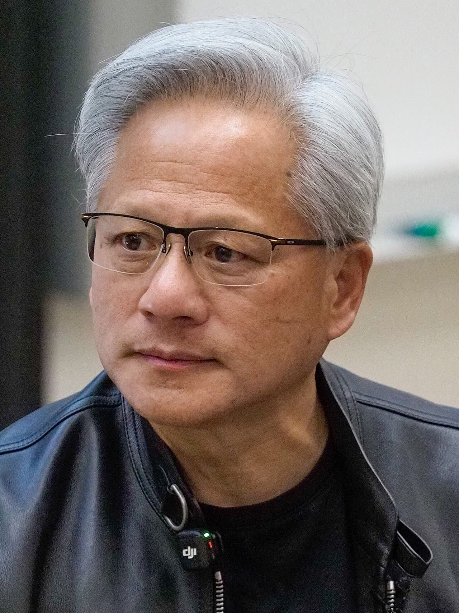

Nvidia, l'ex capo Huang testimonierà alla Camera USA (secondo Mast)
A nostro avviso conta meno con chi stesse Huang e più se i controlli sui chip alla Cina abbiano funzionato: a porte chiuse non lo sapremo, serve almeno il verbale pubblico.
Redazione Contrappunto · aggiornato il 14.11.2026

.jpg){kind=link}
Nvidia è l'azienda americana che progetta i chip più usati per l'intelligenza artificiale; Jensen Huang l'ha fondata e guidata per 33 anni. Giovedì 12 novembre si è dimesso da amministratore delegato, dopo notizie su una sua relazione con una ex dirigente di Megaspeed, un data center con sede a Singapore; secondo Euronews la donna era sorvegliata per un possibile dirottamento di chip verso la Cina. Sul sospetto che lavorasse per l'intelligence cinese le versioni divergono: per la CNN, citata da Dawn, le informazioni raccolte finora non lo provano e i funzionari americani sono divisi; per il New York Times, riferito dal Jerusalem Post, l'intelligence USA aveva concluso che fosse stata reclutata. Pechino respinge l'accusa (Euronews). Per questo le testate lo chiamano «ex CEO», e Breitbart «ousted», cioè estromesso (anche «pushed out»): formalmente ha rassegnato le dimissioni (Euronews, Dawn), ma Reuters, sul Jerusalem Post, scrive che era stato costretto a lasciare. Il NYT, sempre secondo il Jerusalem Post, riferisce che Trump gli telefonò martedì consigliandogli di resistere. Ne abbiamo scritto il 13 novembre (2026-11-13-nvidia-senato-huang-lutnick): il Senato chiede a Huang e al ministro Lutnick di testimoniare in pubblico sui controlli all'export di chip verso la Cina. Questa è la strada della Camera: tre commissioni, guidate da repubblicani, lo vogliono sentire.
Vedi di più: 4 parole spiegate, cosa si racconta
Cosa si raccontaBreitbart, sito di destra, titola sull'«ousted CEO» e apre sull'ipotesi della spia, riprendendo Bloomberg. NBC, di area centro-sinistra, riporta solo ciò che ha detto il presidente della commissione Esteri della Camera, Brian Mast: Huang ha accettato di essere sentito, data e luogo da definire. Euronews resta sulle relazioni di Huang. Nessuna delle fonti lette riporta una dichiarazione dello stesso Huang. [Breitbart] [NBC News] [Euronews]
- Commissioni della Camera
- Tre: Esteri (presidente Brian Mast), Intelligence (Rick Crawford) e quella sulla Cina (John Moolenaar). Il 5 novembre hanno chiesto a Huang un incontro a porte chiuse il 18 novembre (comunicato della commissione Cina); il 12 novembre gli hanno inviato un secondo invito (comunicato del 12 novembre).
- Intervista a porte chiuse e trascritta
- Si svolge davanti ai parlamentari, senza pubblico; resta un verbale scritto (NBC); per Breitbart, che cita Bloomberg, anche un video. Non è un'audizione pubblica.
- Subpoena (mandato di comparizione)
- L'ordine con cui una commissione del Congresso obbliga a presentarsi. La Camera l'aveva minacciato se Huang non avesse confermato entro venerdì 13 novembre alle 20 (ora di New York) (Euronews, NBC).
- Elon Musk
- Imprenditore, a capo di Tesla e SpaceX (Jerusalem Post). Nelle sue parole su X si descrive come cliente di Nvidia (Dawn).
- Il presidente della commissione Esteri della Camera USA, Brian Mast, ha detto giovedì 12 novembre che l'ex capo di Nvidia Jensen Huang ha accettato di testimoniare; sulla data le fonti non coincidono; sarà a porte chiuse (NBC, Breitbart).
- Sabato 14 novembre Elon Musk ha scritto su X che senza Huang Nvidia perderà accordi «critici», perché molti erano accordi di parola, non contratti scritti (Dawn, Jerusalem Post).
- Una conferma di Huang non c'è nelle fonti lette; Nvidia non ha commentato le parole di Musk (Dawn).
Breitbart, sito di destra, apre sull'«ousted CEO» e sull'ipotesi della spia; NBC, area centro-sinistra, riporta solo ciò che ha detto Mast: Huang ha accettato, data e luogo da definire. Una parola di Huang non l'abbiamo letta, e sulla data al Congresso le fonti divergono. Musk lo difende, ma parla da cliente che ha avuto componenti sulla sua parola. A nostro avviso la vita privata di Huang non conta: contano i controlli sull'export. Una testimonianza a porte chiuse non basta; si pubblichi il verbale, e Lutnick risponda in pubblico. Quanto agli accordi miliardari chiusi sulla parola, sono un rischio per gli azionisti, non una virtù. [1] [2] [4] [5]
La verifica punto per punto4 passaggi, 8 fonti
Qui sotto ogni cosa scritta sopra, una per una, con le fonti. Confermato: lo dice un documento originale o più fonti lette. Plausibile: lo riportano fonti serie, ma non abbiamo letto l'originale. Discordante: le fonti danno numeri diversi, e diciamo quali. Ipotesi e Opinione sono il nostro ragionamento, separato dai fatti.
Cosa ha detto Mast
Giovedì 12 novembre Brian Mast, repubblicano della Florida e presidente della commissione Esteri della Camera, ha detto che Huang ha accettato di essere sentito; data e sede erano ancora da negoziare (NBC). Per Breitbart, che cita Bloomberg, Mast ha aggiunto che sarà a porte chiuse, registrata in video e trascritta, davanti alle tre commissioni; il video e il giuramento li scrive solo Breitbart (NBC parla di «closed-door, transcribed interview»). Mast ha ricordato di aver litigato con Huang sull'export, ma ha detto di non voler danneggiare Nvidia (Breitbart). Nell'ultima lettera a Huang, la Camera minacciava un mandato di comparizione se non avesse confermato entro venerdì sera (NBC, Euronews).
Quando testimonia
Per Breitbart, che cita Bloomberg, la testimonianza è attesa prima del Ringraziamento (26 novembre). Per NBC ed Euronews, la lettera della Camera chiede un'intervista a porte chiuse e trascritta il 1° dicembre. Per NBC la data resta da negoziare. Nessuna fonte letta dà un orario o un luogo.
Cosa dice Musk
Sabato 14 novembre Elon Musk ha scritto su X che, senza Huang, «at least some of those critical deals will be lost». Ha detto che Huang ha guidato la catena di fornitura «brilliantly» e che molti accordi erano «a handshake with Jensen, not a written contract»; ha aggiunto che, quando Huang gli dava la sua parola su consegne di potenza di calcolo, «he always came through» (Dawn, Jerusalem Post). Ha scritto anche che firmerebbe una petizione per reintegrarlo (Dawn). Musk si presenta quindi come cliente di Nvidia; non abbiamo letto una fonte sui suoi accordi con Nvidia oltre alle sue parole. Reuters non ha potuto verificare in modo indipendente, e Nvidia non ha commentato (Dawn). Dei dipendenti, secondo messaggi interni trapelati e riferiti dal Jerusalem Post, molti chiedono il ritorno di Huang.
Il nostro punto
È un'opinione. La vita privata di Huang non ci riguarda; ci riguarda se le regole sull'export di chip verso la Cina hanno funzionato. A porte chiuse si risponde più facilmente e il pubblico non sente: chiediamo che il verbale venga pubblicato e che Lutnick, che ha accettato di presentarsi al Senato, risponda in pubblico. E se miliardi di forniture reggono su una stretta di mano, il problema è dell'azienda e dei suoi azionisti: gli accordi si scrivono.
Fonti8, tutte con il link
- Ousted Nvidia CEO Jensen Huang Agrees to Testify Before Congress (14 novembre 2026, archivio de6b1e1045667) (Breitbart) · consultata il 14.11.2026
- Howard Lutnick agrees to testify as bipartisan pressure grows over Nvidia scandal (12 novembre 2026, archivio d1e830d75db3e) (NBC News) · consultata il 14.11.2026
- Jensen Huang and Howard Lutnick summoned to testify before Congress (13 novembre 2026, archivio ddaa41c5fae9a) (Euronews) · consultata il 14.11.2026
- Musk says Nvidia will lose 'critical' deals without Jensen Huang (14 novembre 2026, archivio de7bc0e48fb53) (Dawn) · consultata il 14.11.2026
- Elon Musk says Nvidia risks losing 'critical' deals after Jensen Huang exit (14 novembre 2026, archivio d4d11469e8e47) (The Jerusalem Post (testo Reuters)) · consultata il 14.11.2026
- Moolenaar, Mast, and Crawford Seek Briefing from Jensen Huang on Ties to Chinese Intelligence Asset (5 novembre 2026, archivio dcdfcf0515056) (House Select Committee on China) · consultata il 14.11.2026
- Chairmen Moolenaar, Mast, and Crawford Send Second Request to Jensen Huang and NVIDIA to Brief Congress (12 novembre 2026, archivio daff7bc005996) (House Select Committee on China) · consultata il 14.11.2026
- Can Nvidia survive without tech titan Jensen Huang? (14 novembre 2026, archivio d1465c3a735de; video, solo testo di presentazione) (France 24) · consultata il 14.11.2026
Testo preparato con strumenti di intelligenza artificiale e pubblicato senza revisione umana. Come lavoriamo